CashTrack
A cash-flow forecasting product that helps BMO clients anticipate account balances. I led its development end to end, from time-series modeling to scalable cloud deployment.
- Cash-flow forecasting
- Time-series modeling
Lead Applied AI Researcher
BMO Institute for Applied AI & Quantum
I lead applied AI research at the intersection of frontier modeling and financial services. With more than eight years of experience, I build financial foundation models and translate advances in AI into scalable solutions for regulated banking. I have led cross-functional teams in bringing award-winning AI products from research to deployment, reaching more than 2 million users.
My research background spans computer vision and generative modeling. I was a Postdoctoral Research Fellow at the University of British Columbia and Vector Institute, working with Prof. Leonid Sigal. I earned my Ph.D. from Southwest Jiaotong University in 2017 under the supervision of Prof. Xiao Wu. During the final two years of my doctoral studies, I was a visiting researcher with the Learning and Vision Research Group at the National University of Singapore, advised by Profs. Jiashi Feng and Shuicheng Yan.
At BMO, I build foundation models for banking: models pretrained on financial data such as transactions, client activity and time series, so that one model can support many products instead of each team starting from scratch.
A cash-flow forecasting product that helps BMO clients anticipate account balances. I led its development end to end, from time-series modeling to scalable cloud deployment.
I develop graph neural networks that turn transaction relationships into reusable client representations for recommendations, cross-selling, and other client-level models.
I pretrain models across transaction, time-series, and tabular banking data, giving new prediction and forecasting tasks a shared starting point.
Global AI Award, The Digital Banker, for home-finance forecasting at BMO
U.S. Patent 12,299,727 B2: Artificial Intelligence Modeling to Predict Electronic Account Data
Celent Model Bank Award for CashTrack
BAI Award for CashTrack
CVPR oral presentation (top ~5%) for Image Generation from Layout
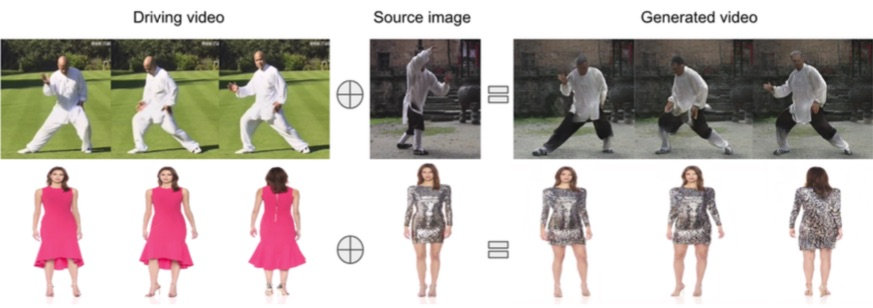
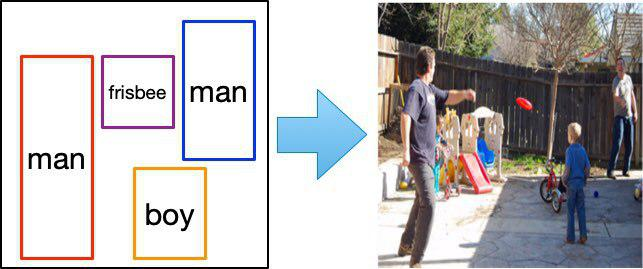
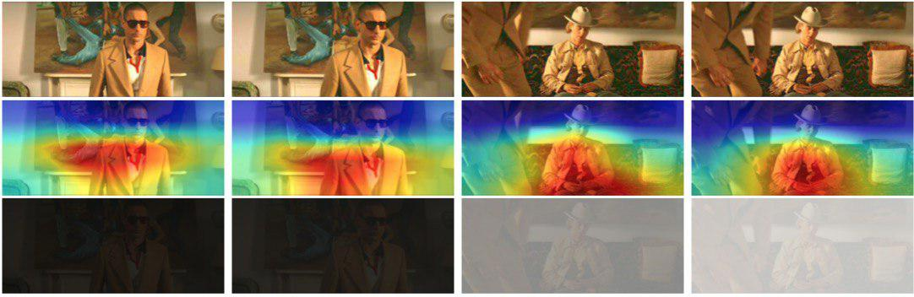
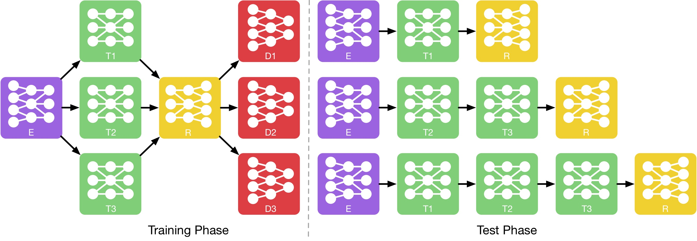
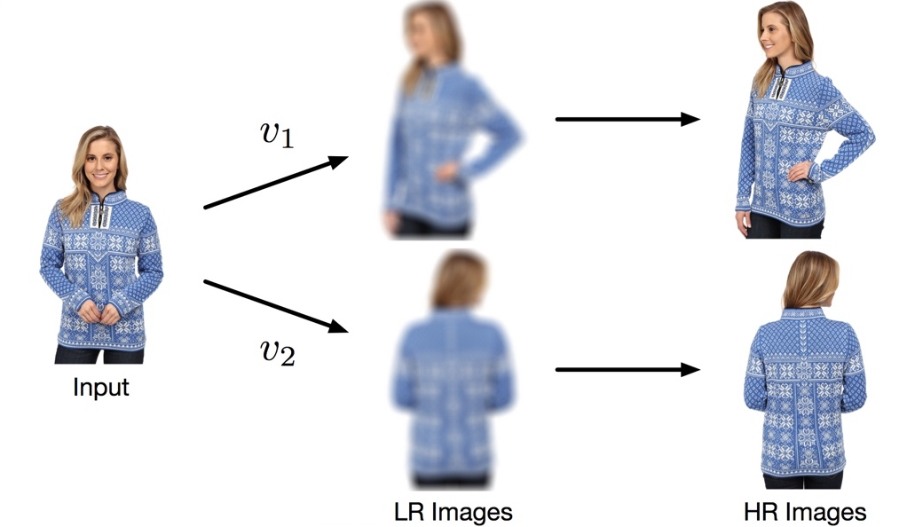
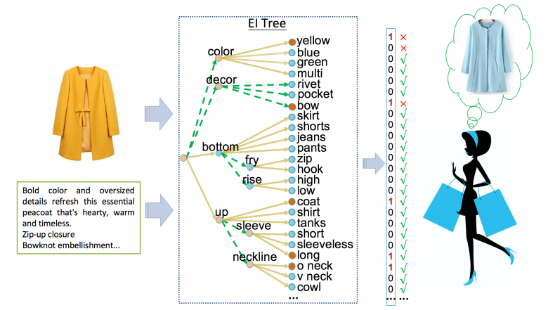
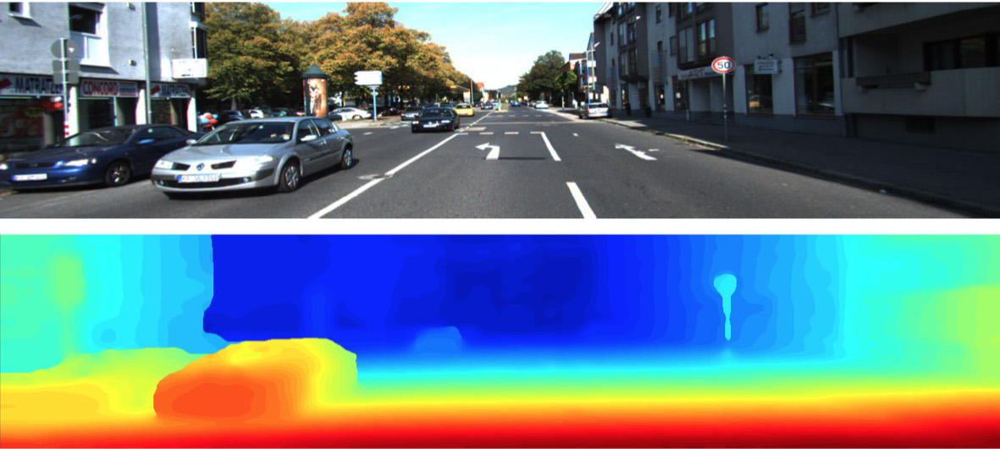
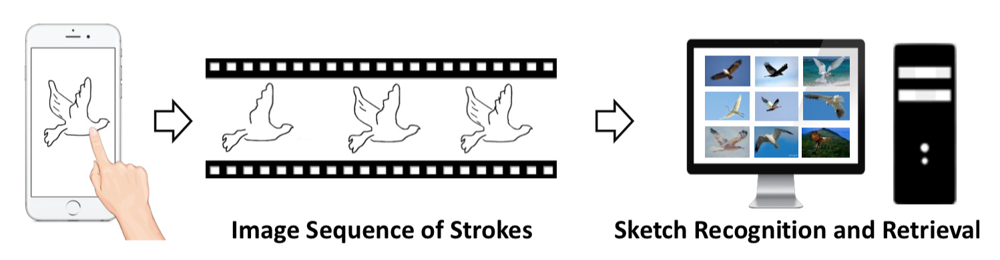
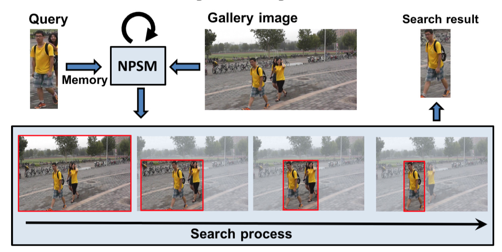
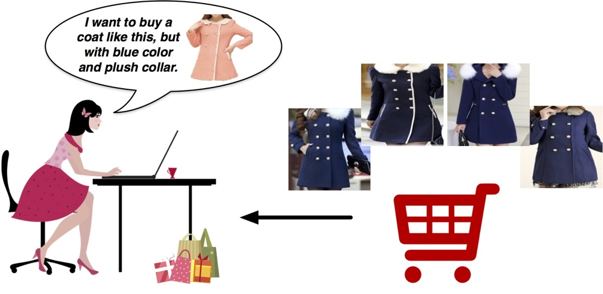
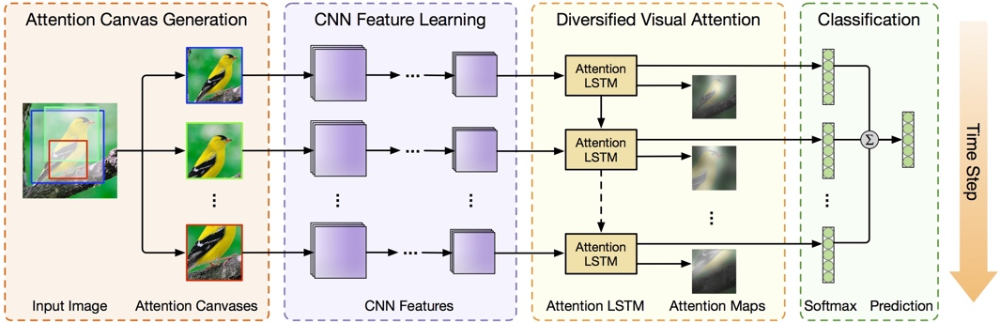
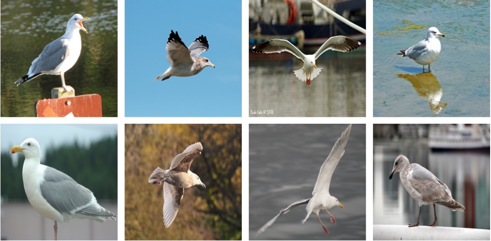
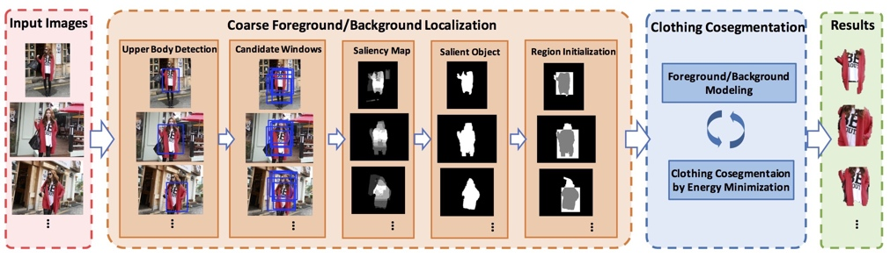
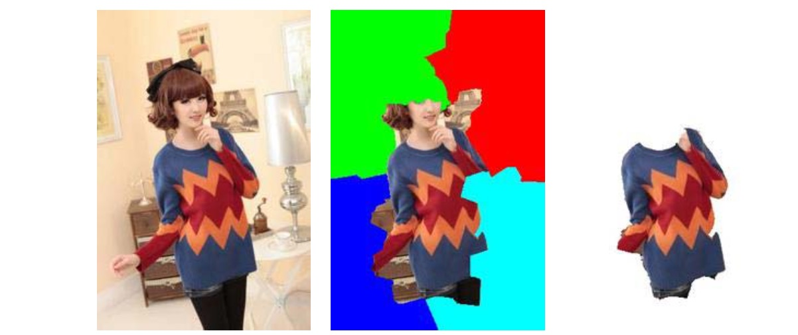
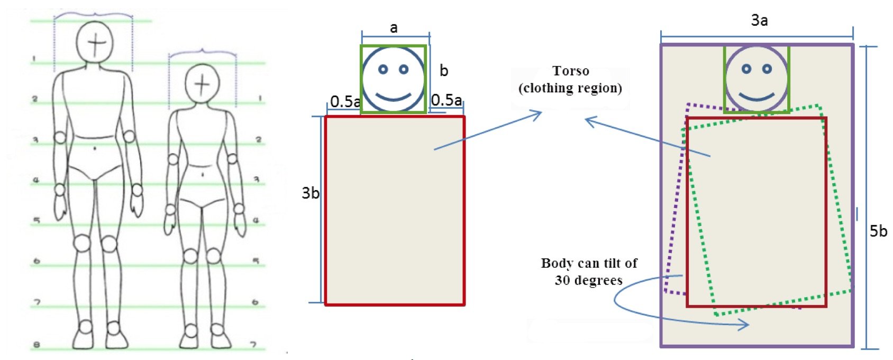